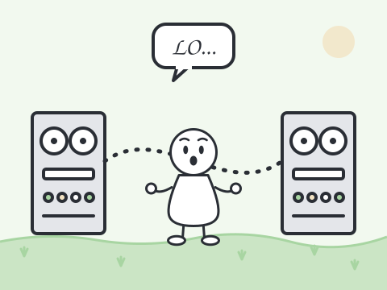
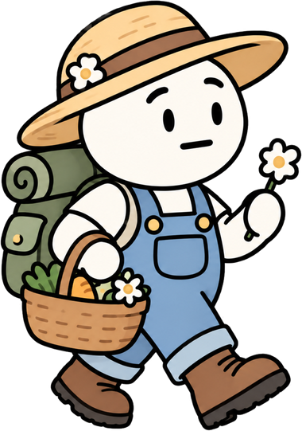
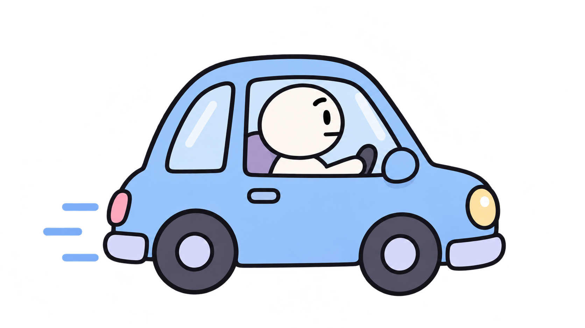
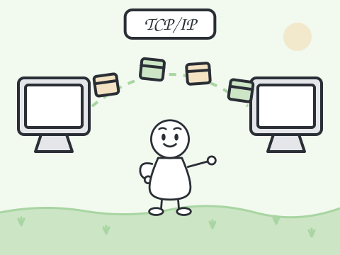
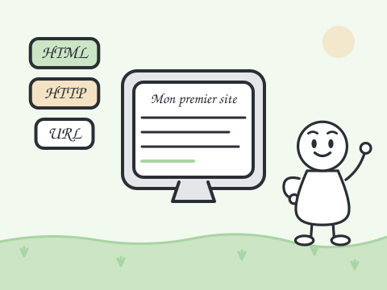
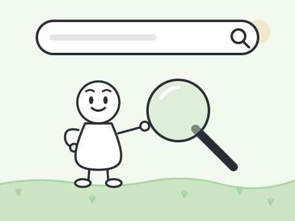
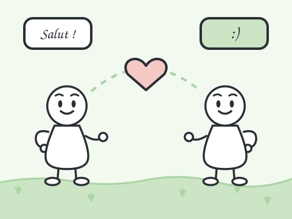
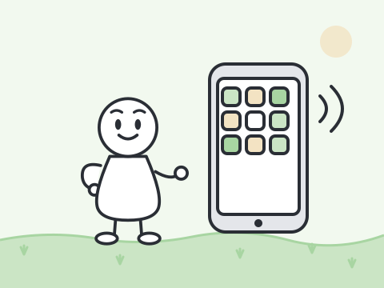
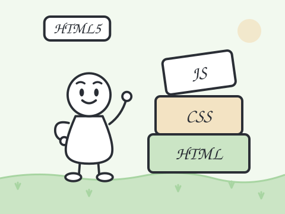
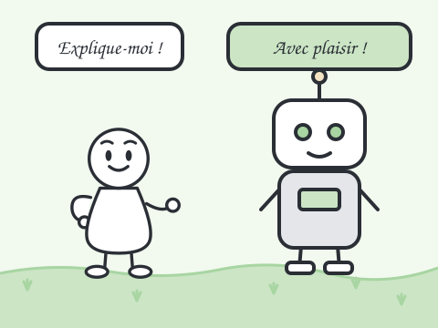

1969
Technologie
ARPANET, le premier réseau
Deux ordinateurs éloignés (à l'UCLA et à Stanford) échangent un premier message, « LO » : les machines peuvent désormais communiquer à distance.
Prenons la petite route de campagne et remontons le temps : de village en village, découvrons les grandes étapes qui ont fait Internet et le web.
En route ! Notre carnet de voyage nous attend.

On confond souvent les deux. Internet est le réseau mondial qui relie les ordinateurs entre eux. Le web est l'un des services qui l'utilisent : des pages reliées entre elles par des liens.
Pour se représenter : Internet, ce sont les routes de campagne. Le web, ce sont les villages que l'on visite grâce à elles. L'e-mail, lui, est un autre service qui emprunte les mêmes routes.
Tournez les pages avec les flèches, ou faites glisser votre doigt sur téléphone. Vous pouvez aussi cliquer sur une borne du chemin.


1969
Technologie
Deux ordinateurs éloignés (à l'UCLA et à Stanford) échangent un premier message, « LO » : les machines peuvent désormais communiquer à distance.

1983
Standard
Le 1er janvier, tout ARPANET adopte les mêmes règles pour découper les données en paquets et les envoyer : c'est la naissance d'Internet tel qu'on le connaît.

1991
Standard
Le web s'ouvre au monde avec ses trois piliers : HTML pour écrire les pages, HTTP pour les transmettre et l'URL pour les retrouver.
1993
Technologie
Le CERN offre le web au domaine public, et le navigateur Mosaic affiche images et texte ensemble : le grand public découvre le web.

1998
Service
Ce moteur de recherche classe les pages selon leur pertinence : trouver une information devient beaucoup plus facile.

2004
Service
Les réseaux sociaux deviennent un lieu central pour échanger : le web devient participatif, c'est le « web 2.0 ».

2007
Technologie
Le smartphone met Internet dans la poche : on se connecte partout, tout le temps.

2014
Standard
Le W3C publie officiellement HTML5 : vidéo, son et animations s'intègrent aux pages sans module supplémentaire.

2022
Technologie
L'intelligence artificielle générative arrive dans le grand public et change la façon de chercher et de créer.
Étape 1 sur 9
Texte provisoire : décrivez le web actuel et ses évolutions possibles.